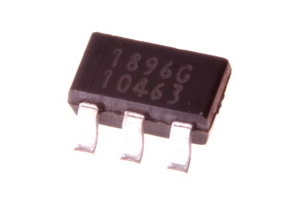

SMD (SOT-23-6) Adjustable Voltage Regulator 200 mA - VS36A

Summary
Name: SMD (SOT-23-6) Adjustable Voltage Regulator 200 mA
ID: VREG-SO236-X-ADJU-AE
Hex ID: VS36A
WebPage: https://github.com/oomlout/oomlout-OOMP/wiki/VREG-SO236-X-ADJU-AE
Short URL: http://oom.lt/VS36A
Revision History: https://github.com/oomlout/oomlout-OOMP/blob/master/parts/VREG-SO236-X-ADJU-AE/
| Type |
Size |
Color |
Description |
Index |
VREG
Voltage Regulator |
SO236
SMD (SOT-23-6) |
X
|
ADJU
Adjustable |
AE
200 mA |
Images
About
This part is awaiting a description.
Specifications
| Info |
Value |
| Type |
Voltage Regulator |
| Size |
SMD (SOT-23-6) |
| Description |
Adjustable |
| Index |
200 mA |
Extra Details
Spotted a mistake, want to add more? Let us know oomp@oomlout.com
All images and resources are licensed [CC BY-SA] unless otherwise stated (ie. the datasheets)